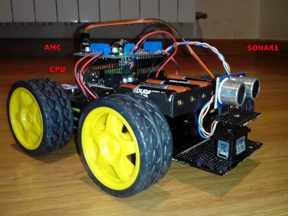

Robot en formato ROVER con control basado en Arduino.
El
proyecto ARBI-arduino se concebió para desarrollo de una plataforma de
investigación de las tecnologias básicas usadas en el control autónomo
de un robot con capacidades de locomoción.
La Fase 1 del proyecto (ARBI1) integra
sobre una plataforma movil
diferente elementos como sensores, servos, motores y comunicación, gestionados por una placa controladora Arduino
UNO.
El software de control de ARBI1 explora
las tecnicas básicas de
control de movimiento autonomo de vehiculos basado en informacion de
los sensores incorporados.Detección de obstaculos, toma de decisiones
de mejor ruta son los principales objetivos de la primera fase del
proyecto.
Objetivos
El objetivo del proyecto ARBI es desarrollar el "know-how"
relacionado con las programación de los sistemas necesarios con el
control autónomo de un rover. Este objetivo se divide en 3 sub objetivos.
- Conocer los diferentes elementos electrónicos usados para el
control de movimiento autónomo de un rover.
- Estudio de los algoritmos de control para movimiento autónomo de
un rover de 4 ruedas.
- Desarrollo de un sistema de telemetria y control remoto.
Especificaciones y carácteristicas
- 4 ruedas motorizadas, movidas independientemente por 4 motores de
corriente continua.
- 2 sensores de proximidad basados en ultrasonido.
- 5 velocidades.
- Movimiento de sensor delantero.
- Consumo medio: 500 mA.
- Telemetría y control sobre canal inalámbrico a 2.4GHz.
Fuente de energía
La energia es obtenida por un pack de
6 baterías "AA" la cual genera 9V
de electricidad para la alimentacion de los sistemas electrónicos y el
movimiento de los motores.
Sistemas
- Unidad
de procesamiento central (CPU): Esta basada en la tarjeta
"Arduino UNO (SainSmart UNO R3)".
Es el ordenador que ejecuta el programa de controla todas las funciones
de todos los sistemas del rover. Usa un microcontrolador ATmega328
corriendo a 20MHz.
- Control
de motores Adafruit (AMC): Este sistema esta basado en la placa "Adafruit
Motor Shield V2". Se encarga de proporcionar la energia para mover
cada uno de los 4 motores de corriente continua de las ruedas. El
controlador envía las ordenes al AMC usando el bus i2c.
- Detector
de distancia por ultrasonido (SONAR1, SONAR2): Estos sensores
miden la distancia desde rover hacia cualquier obstáculo en la
dirección de movimiento. SONAR1 esta instalado en la parte delantera, y
a diferencia de SONAR2 que es fijo, éste puede hacer un barrido de 160º
para detectar obstaculos en un area mas amplia.
- Radio
de control y telemetría (DATAR): El rover dispone de una radio
de comunicaciones bidireccional que establece un canal de comunicacion
con el exterior. Una frecuencia portadora de 2.4GHz ISM permite, de
manera robusta, recibir comandos desde sistemas externos y ademas
enviar datos de dianóstico tanto de los sensores como de los parametros
procesados internamente en la CPU.
Foto Arbi Rover ARBI1

Enlaces internos